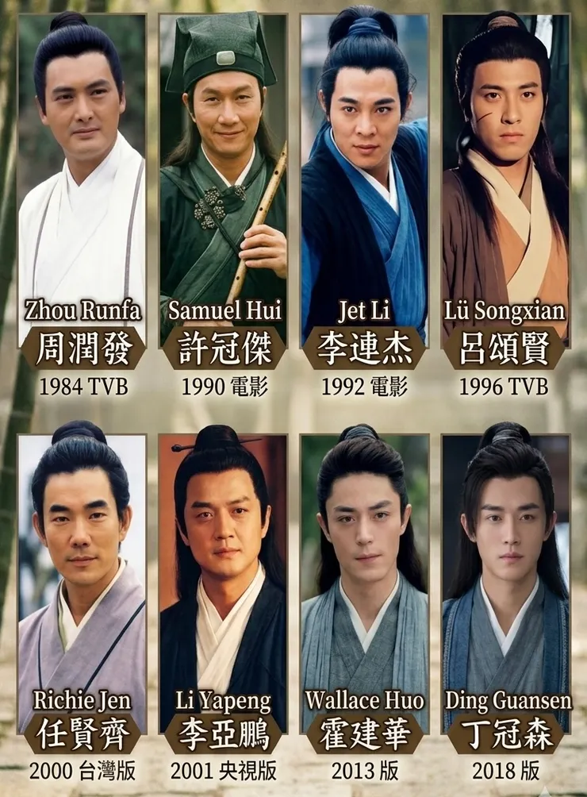

年輕時羨慕令狐沖的奇遇，風太師叔親傳獨孤九劍，得以笑傲江湖。中年後才明白，沒有什麼東西叫做天下無敵，令人嚮往的是那份不被江湖困住的自由。
如果要挑選一位最喜歡的武俠人物，我的答案絕對是令狐沖。不是因為他武功高，金庸筆下天下無敵的小說男主角不少，但令狐沖甚至在笑傲江湖裡，都無法匹敵東方不敗。
他的人生更是充滿挫折，被師父誤會、被同門猜忌、被逐出師門、身受重傷，甚至連最愛的小師妹都移情別戀，最後跟世人不容的聖姑在一起。即便如此，他始終活得像他自己。
這才是令狐沖最迷人的地方。
放蕩不羈，但不是玩世不恭
很多人對令狐沖的第一印象，是愛喝酒、不守規矩、吊兒郎當。
不像郭靖那樣循規蹈矩，也不像陳家洛那樣肩負大業，更不像張無忌那樣天下無敵、處處留情。
他經常犯錯，甚至常常做不被主流價值接受的決定。
但他並不是沒有原則。他的不羈，是對虛偽的不屑；他的灑脫，是對權勢的不貪。
別人汲汲營營爭奪掌門、爭奪秘笈、爭奪名聲時，他最想做的只是找幾個朋友喝酒聊天。
這樣的人，看似隨便，其實最難得。
不拘小節，但深明大義
令狐沖最大的魅力，在於他從不以門派、正邪來判斷一個人。
他可以和魔教長老把酒言歡，也可以為了朋友兩肋插刀。
在別人眼裡，這叫離經叛道。
但在他眼裡，人品比立場重要。
他看重的是一個人值不值得交。
而不是這個人屬於哪個陣營。
這樣的價值觀，即使放到今天的社會，依然難能可貴。
因為現代人太習慣先貼標籤，再決定喜不喜歡一個人。
令狐沖剛好相反。
他總是先看人，再看立場。
真正的自由，不是想做什麼就做什麼
許多人羨慕令狐沖的灑脫。
但我認為他最厲害的，不只是瀟脫，而是自由。
不被名利綁架、不被權力誘惑、不被世俗期待控制。
可以當掌門，卻不想當。可以稱霸武林，卻沒興趣。
他擁有能力，卻不執著於擁有地位。
自己選擇的自由，比獨孤九劍更難練成。
人到中年後，越來越羨慕令狐沖
年輕時喜歡令狐沖，是因為喜歡他在玩世不恭面具下面，依舊背負深明大義的靈魂。
長大後羨慕令狐沖，因為他的活法其實很難。
當大家都在比較職位、收入、房子和頭銜時，還能保有自己的節奏；
當所有人都希望你成為某種樣子時，還能忠於自己的內心；
當受了委屈和誤解時，依然選擇坦蕩而不是算計。
這樣的人，或許不一定成功，但活得自在。

誰是你心目中那個笑傲江湖的令狐沖
這麼多年來，電影電視翻拍了好多版本的笑傲江湖，其中呂頌賢最吸引我，我覺得他演出了令狐沖的靈魂。透過他呈現的令狐沖讓我相信，人可以不完美，卻依然活得瀟灑；可以不迎合世界，卻仍然心懷善意。在我眼中：
令狐沖之所以迷人，不是因為他劍法高，而是因為他活成了很多人想活卻不敢活的樣子。
而誰又是你心目中那個笑傲江湖的令狐沖呢？
投票
- 更新選擇
誰是你心目中那個笑傲江湖的令狐沖
- 周潤發
- 許冠傑
- 李連杰
- 呂頌賢
- 霍建華